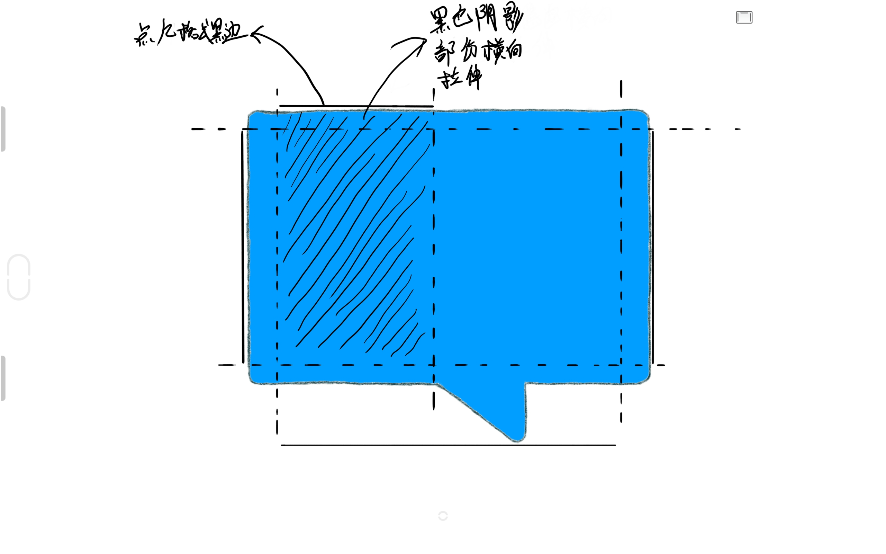

.9.png格式的图片是什么
简介
.9.png格式的图片常用于UI设计上，这种图片用于需要拉伸变形的地方，例如文本框，搜索框等。
经过.9处理的图片四条边都会有一条黑线或者是一个黑点，如果是一个黑点的话像素是1x1。如果是一条线，那么就是由1x1的像素组成的线，每天边上的黑点或黑线都代表者不同的意思。
注意
站长是不会看评论的，如有任何技术问题可以在关于页面找到我的联系方式联系我。
上边的黑点或黑线
.9.png图片的上边的黑点或黑线表示的是横向拉伸的时候变形的区域
从黑色的点或者是线的两端画两条平行的线到低端，这两条线中间的区域就是这张图片横向拉伸时变形的区域，其余的区域则会保持原样，不会发生变形。

左边的黑点或黑线
.9.png图片左边的黑点或黑线表示的是纵向拉伸的时候变形的区域
从左边的黑线或者是黑点的两端画两条平行的横线到右边，这两条线中间的区域则是这张图片纵向拉伸的时候变形的区域，其余的区域则保持原样，不会变形。
底边的黑点或黑线
.9.png图片底边的黑点或黑线表示的是横向显示的内容所在的区域
也是一样的，总底部的黑点或者是黑线往上画两条相互平行的线，这两条线中间的区域就是文本或者是其他内容所显示的区域。
右边的黑点或黑线
.9.png图片的右边的黑点或黑线表示的是纵向显示内容的区域
从右边的黑点或者是黑线画往左边画两条相互平行的直线，这两条直线之间的空间就是文本或者是其他内容所显示的区域。

总结
.9.png图片的上边和左边的黑点或者是黑线限制的是这张图片拉伸的区域，横向拉伸的时候变形的地方则是上边的黑点或者是黑线对应的图片的区域，纵向拉伸的时候则变形的地方是左边的黑点或者是黑线对应的这张图片的横向的地方，右边和底部则是限制了内容显示的区域，底边的黑点或者是黑线对应到图片上就是内容横向显示的区域，右边的黑点或者是黑线对应到图片上就是内容纵向的区域。
结尾彩蛋
本博客所有文章除特别声明外，均采用 CC BY-SA 4.0 协议 ，转载请注明出处！